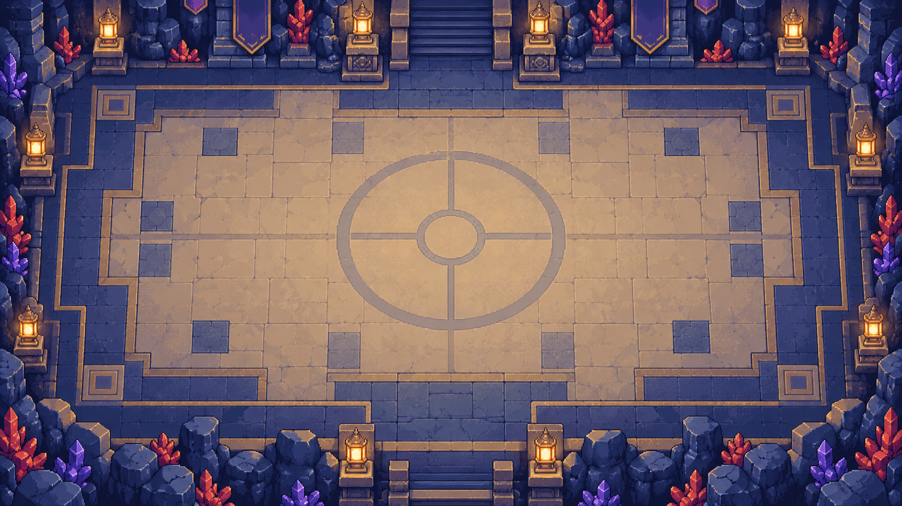

ARENA DE TREINADORES
Campos de batalha
Conheça os cenários. Os duelos começam no tabuleiro e o resultado volta para a partida.
Kanto · Planalto ÍndigoVISTA FRONTAL · CAMPO DE BATALHA

Enfrente o defensor ao cair na casa dele. Vitória: 50% do aluguel. Derrota: aluguel com multa de 50%. Empate: aluguel normal.
Jogar no tabuleiro →